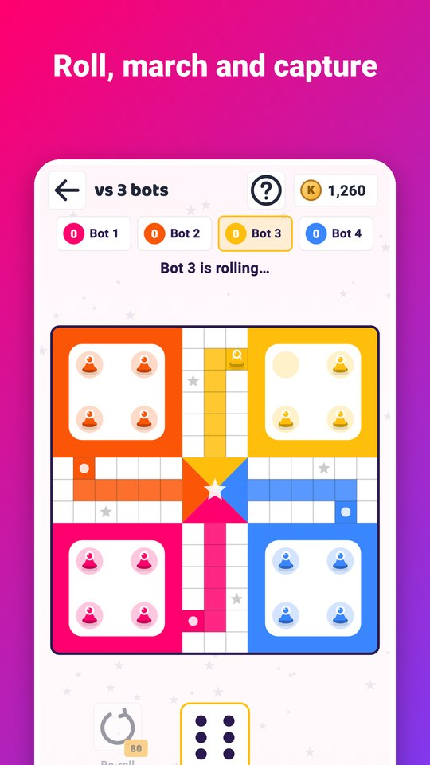
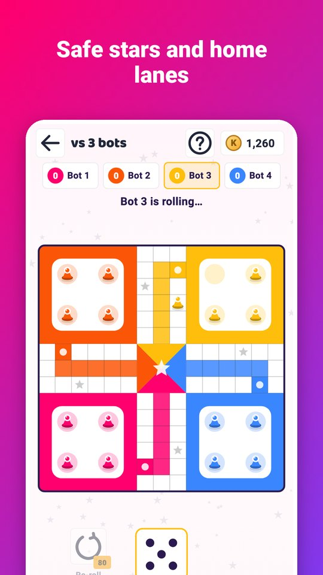
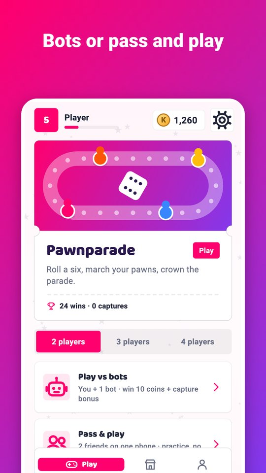
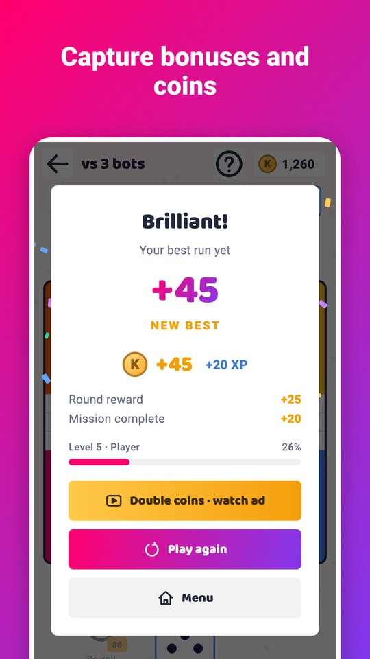
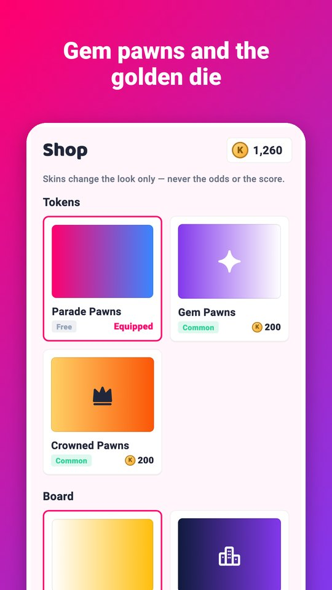

Pawnparade is ludo with a bright parade look. Roll a six to bring a pawn out, march it round the board and up your coloured lane to the centre.
- Two to four players: play bots or pass the phone to friends.
- Sixes, captures and pawns reaching home all roll again.
- Land on a rival pawn to send it back to its yard; stars and entry squares are safe.
- The centre needs an exact roll.
- A re-roll booster for games against bots.
- Pawns, boards and dice: Gem Pawns, Crowned Pawns, City Lights and the Golden Die.